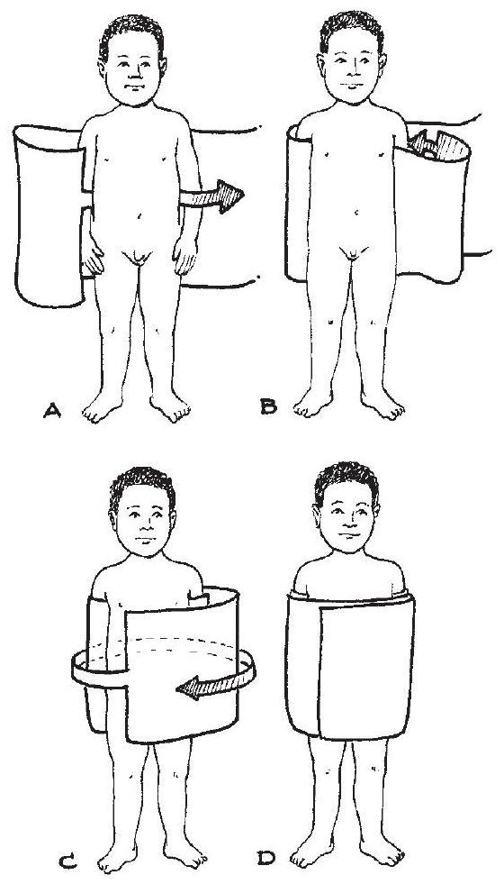
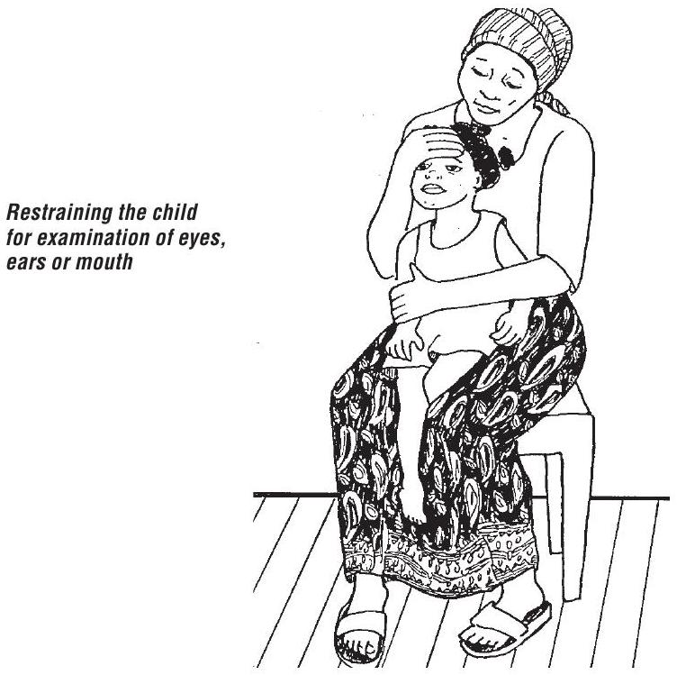
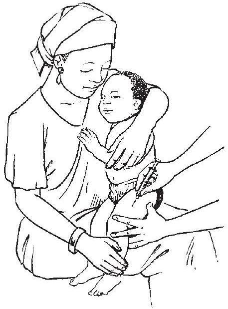
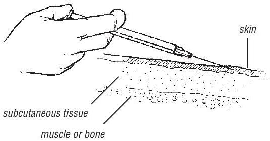
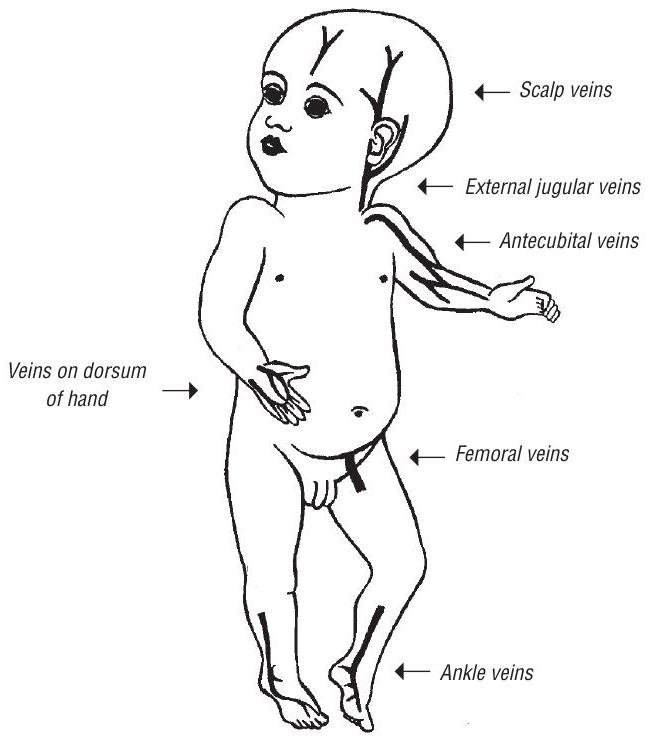

Bibliography & Annexes
Bibliography
This Pocket book was updated on the basis of recommendations and guidelines derived from published guidelines that are regularly reviewed and updated by the Guidelines Review Committee. These can be accessed on the WHO website at http://www.who.int/maternal_child_adolescent/en/. The second edition of the Pocket book has been revised to be consistent with current WHO guidelines and recommendations as of June 2012.
- WHO (2012). Recommendations for management of common childhood conditions: Evidence for technical update of pocket book recommendations. Geneva. ISBN: 9789241502825. http://www.who.int/maternal_child_adolescent/documents/ management_childhood_conditions/en/index.html.
- WHO (2012). Guidelines on basic newborn resuscitation. Geneva. http://www.who.int/maternal_child_adolescent/documents/basic_ newborn_resuscitation/en/index.html.
- WHO (2012). Technical note: Supplementary foods for the management of moderate acute malnutrition in infants and children 6-59 months of age. Geneva. http://www.who.int/nutrition/publications/moderate_ malnutrition/9789241504423/en/index.html.
- WHO (2012). WHO guidelines on the pharmacological treatment of persisting pain in children with medical illnesses. Geneva. http://www.who.int/medicines/areas/quality_safety/guide_ perspainchild/en/index.html.
- WHO (2012). Care for child development: improving the care for young children. Geneva. http://www.who.int/maternal_child_adolescent/documents/care_child_ development/en/index.html.
- WHO (2012). HIV and infant feeding 2010: an updated framework for priority action. Geneva. http://www.who.int/maternal_child_adolescent/documents/9241590777/ en/index.html.
- WHO (2012). Integrated Management for Emergency and Essential Surgical Care (IMEESC) tool kit. Geneva. http://www.who.int/surgery/publications/imeesc/en/index.html.
- WHO (2011). Manual on paediatric HIV care and treatment for district hospitals. Geneva. http://www.who.int/maternal_child_adolescent/ documents/9789241501026/en/index.html.
- WHO (2011). mhGAP intervention guide for mental, neurological and substance use disorders in non-specialized health settings. Geneva. http://www.who.int/mental_health/publications/mhGAP_intervention_ guide/en/index.html.
- WHO (2011). Guidelines on optimal feeding of low birth-weight infants in lowand middle-income countries. Geneva. http://www.who.int/maternal_child_adolescent/documents/infant_ feeding_low_bw/en/index.html.
- WHO (2011). Priority medicines for mothers and children 2011. Geneva (WHO/EMP/MAR/2011.1). http://www.who.int/medicines/publications/emp_mar2011.1/en/index. html.
- WHO (2011). Third model list of essential medicines for children. Geneva. http://whqlibdoc.who.int/hq/2011/a95054_eng.pdf.
- WHO (2010). Guidelines on HIV and infant feeding 2010. Principles and recommendations for infant feeding in the context of HIV and a summary of evidence. Geneva. http://www.who.int/maternal_child_adolescent/ documents/9789241599535/en/index.html.
- WHO (2010). Antiretroviral therapy for HIV infection in infants and children: Towards universal access. Geneva. http://www.who.int/hiv/pub/paediatric/infants2010/en/index.html.
- WHO (2010). WHO recommendations on the management of diarrhoea and pneumonia in HIV-infected infants and children. Geneva. http://www.who.int/maternal_child_adolescent/ documents/9789241548083/en/index.html.
- WHO (2010). Guidelines for the treatment of malaria, 2nd ed. Geneva. http://www.who.int/malaria/publications/atoz/9789241547925/en/index. html.
- WHO (2010). Rapid advice: treatment of tuberculosis in children. Geneva. http://whqlibdoc.who.int/publications/2010/9789241500449_eng.pdf.
- WHO (2010). Guidelines for treatment of tuberculosis, 4th ed. Geneva. http://www.who.int/tb/publications/2010/9789241547833/en/index.html.
- WHO (2010). Essential newborn care course. Geneva. http://www.who.int/maternal_child_adolescent/documents/ newborncare_course/en/index.html.
- WHO (2009). Training course on the management of severe malnutrition, update 2009. Geneva. http://www.who.int/nutrition/publications/severemalnutrition/training_ inpatient_MSM/en/index.html.
- WHO (2009). WHO child growth standards and the identification of severe acute malnutrition in infants and children. Geneva. http://www.who.int/maternal_child_adolescent/ documents/9789241598163/en/index.html.
- WHO Multicentre Growth Reference Study Group (2009). WHO child growth standards: growth velocity based on weight, length and head circumference: methods and development. Geneva. http://www.who.int/childgrowth/en/index.html.
- WHO, World Food Programme and UNICEF (2007). Community-based management of severe acute malnutrition. A joint statement by the World Health Organization, the World Food Programme, the United Nations System Standing Committee on Nutrition and the United Nations Children's Fund. Geneva. http://www.who.int/nutrition/publications/ severemalnutrition/9789280641479/en/index.html.
- WHO (2007). Report of the WHO Expert Committee on the Selection and Use of Essential Medicines. Geneva. http://www.who.int/medicines/services/expertcommittees/ essentialmedicines/15_MAY_TRSreport.pdf.
- WHO (2005). The treatment of diarrhoea: A manual for physicians and other senior health workers. Geneva. http://www.who.int/maternal_child_adolescent/documents/9241593180/ en/index.html.
- WHO (2003). Managing newborn problems: a guide for doctors, nurses and midwives. Geneva. http://www.who.int/reproductivehealth/publications/maternal_ perinatal_health/9241546220/en/index.html.
- WHO (2003). Surgical care at the district hospital. Geneva. http://www.who.int/surgery/publications/en/.
- WHO (2003). Rheumatic fever and rheumatic heart disease: report of a WHO expert consultation. Geneva. http://www.who.int/cardiovascular_diseases/resources/trs923/en/.
- WHO (2001). Clinical use of blood. Geneva. http://www.who.int/bloodsafety/clinical_use/en/index.html.
Annex 1: Practical procedures
Practical procedures should first be explained to the parents or to the child if she or he is old enough; any risks should also be discussed with them and their consent obtained. Procedures on young infants should be carried out in warm surroundings to avoid hypothermia. Good light is essential. Older children should be told what is to happen. Analgesia should be given when necessary.
Analgesia and sedation for procedures
For some procedures (e.g. chest tube insertion or femoral cannulation), sedation with diazepam or light anaesthesia with ketamine should be considered (see section 9.1.2, p. 258).
For diazepam sedation, give $0.1-0.2 \mathrm{mg} / \mathrm{kg}$ IV. For ketamine, give $2-4 \mathrm{mg} / \mathrm{kg}$ IM; this takes 5-10 min to act and lasts for about 20 min .
 When giving any sedation or light anaesthesia, manage the child's airway, beware of respiratory depression, and monitor oxygen saturation with a pulse oximeter, when possible. Make sure you have a resuscitation bag available and, if possible, oxygen.
A1.1 Giving Injections
First, find out whether the child has reacted adversely to drugs in the past. Wash your hands thoroughly. Use disposable needles and syringes.
Clean the chosen site with an antiseptic solution. Carefully check the dose of the drug to be given, and draw the correct amount into the syringe. Expel the air from the syringe before injecting. Always record the name and amount of the drug given. Discard disposable syringes in a safe container.
A1.1.1 Intramuscular
In children aged > 2 years, give the injection into the outer thigh or the upper, outer quadrant of the buttock, well away from the sciatic nerve. In younger or severely malnourished children, use the outer side of the thigh midway between the hip and the knee or over the deltoid muscle in the upper arm. Push the needle (23-25-gauge) into the muscle at a $90^{\circ}$ angle ( $45^{\circ}$ angle in the thigh). Draw back the plunger to make sure there is no blood (if there is, withdraw slightly and try again). Give the drug by pushing the plunger slowly until the end. Remove the needle, and press a small swab or cotton-wool firmly over the injection site.
A1.1.2 Subcutaneous
Select the site as described above for intramuscular injection. Push the needle (23-25-gauge) under the skin at a $45^{\circ}$ angle into the subcutaneous fatty tissue. Do not enter the underlying muscle. Draw back the plunger to make sure there is no blood (if there is, withdraw slightly and try again). Give the drug by pushing the plunger slowly until the end. Remove the needle and press cotton-wool firmly over the injection site.
A1.1.3 Intradermal
For an intradermal injection, select an undamaged, uninfected area of skin (e.g. over the deltoid in the upper arm). Stretch the skin between the thumb and forefinger of one hand; with the other, slowly insert the needle ( 25 gauge), bevel upwards, about 2 mm just under and almost parallel to the surface of the skin. Considerable resistance is felt when injecting intradermally. A raised, blanched bleb showing the surface of the hair follicles is a sign that the injection has been given correctly.
 Annex 2: Drug dosages and regimens
This section gives the doses of the drugs mentioned in these guidelines that are suitable for infants and children. For ease of use and to avoid having to make calculations, doses are given according to the body weight of the child. As errors in calculating drug doses are common in hospital practice worldwide, calculations should be avoided, when possible. Doses are given covering a range of body weights, from $3-29 \mathrm{~kg}$. A table for neonates in the first 2 months of life is included in Chapter 3, pp. 69-72.
For some drugs (for example, antiretroviral drugs), however, it is better to calculate the exact individual doses on the basis of the body weight of the child, where this is possible. The drugs include those for which the exact dose is critically important to ensure a therapeutic effect or to avoid toxicity, e.g. digoxin, chloramphenicol, aminophylline and antiretroviral drugs.
For some antiretroviral drugs, the recommended dosages are often given according to the surface area of the child. A table giving approximate child surface area for different weight categories is given below to help in this calculation. The doses in the table can then be used to check that the calculated dose is approximately correct (and to check that a calculation error has not been made).
Thus, a child weighing 10 kg and 72 cm long has a body surface area of
| Age or weight of child | Surface area ( $\mathrm{m}^{2}$ ) |
|---|---|
| Neonate (< 1 month) | 0.2-0.25 |
| Young infant (1-< 3 months) | 0.25-0.35 |
| Child $5-9 \mathrm{~kg}$ | 0.3-0.45 |
| Child $10-14 \mathrm{~kg}$ | 0.45-0.6 |
| Child $15-19 \mathrm{~kg}$ | 0.6-0.8 |
| Child $20-24 \mathrm{~kg}$ | 0.8-0.9 |
| Child $25-29 \mathrm{~kg}$ | 0.9-1.1 |
| Child $30-39 \mathrm{~kg}$ | 1.1-1.3 |
Example: if the recommended dose is given as $400 \mathrm{mg} / \mathrm{m}^{2}$ twice a day, then for a child in the weight range $15-19 \mathrm{~kg}$ the recommended dose range will be: $(0.6-0.8) \times 400=244-316 \mathrm{mg}$ twice a day.
| Drug | Dosage | Form | Dose according to body weight | ||||
|---|---|---|---|---|---|---|---|
| $3-<6 \mathrm{~kg}$ | $\mathbf{6}-<\mathbf{10 ~ kg}$ | $10-<15 \mathrm{~kg}$ | $15-<20 \mathrm{~kg}$ | $20-29 \mathrm{~kg}$ | |||
| Adrenaline | |||||||
| For wheeze | $0.01 \mathrm{ml} / \mathrm{kg}$ (up to a maximum of 0.3 ml ) of 1:1000 solution (or $0.1 \mathrm{ml} / \mathrm{kg}$ of $1: 10$ 000 solution) given subcutaneously with a 1 -ml syringe | Calculate exact dose based on body weight (as rapid-acting bronchodilator) | |||||
| For severe viral croup | $0.5 \mathrm{ml} / \mathrm{kg}$ of 1:1000 solution (maximum dose: 5 ml ) | - | 3 ml | 5 ml | 5 ml | 5 ml | |
Annex 3: Equipment sizes
| Equipment | $0-5$ months $(3-6 \mathrm{~kg})$ | $6-12$ months $(4-9 \mathrm{~kg})$ | $1-3$ years $(10-15 \mathrm{~kg})$ | $4-7$ years $(16-20 \mathrm{~kg})$ |
|---|---|---|---|---|
| AIRWAY AND BREATHING | ||||
| Laryngoscope | Straight blade | Straight blade | Child Macintosh | Child Macintosh |
| Uncuffed tracheal tube | 2.5-3.5 | 3.5-4.0 | 4.0-5.0 | 5.0-6.0 |
| Stylet | Small | Small | Small/ medium | Medium |
| Suction catheter (French gauge) | 6 | 8 | 10/12 | |
| CIRCULATION | ||||
| IV cannula | 24/22 | 22 | 22/18 | 20/16 |
| Central venous cannula | 20 | 20 | 18 | 18 |
| OTHER EQUIPMENT | ||||
| Nasogastric tubea | 8 | 10 | 10-12 | 12 |
| Urinary cathetera | 5 feeding tube | 5 feeding tube/F8 | Foley 8 | Foley 10 |
a Sizes in French gauge or Charrière, which are equivalent and indicate the circumference of the tube in millimetres.